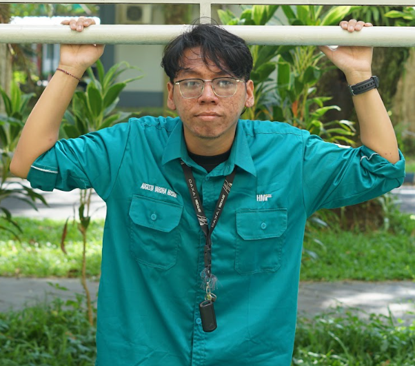

Halo Semua, Salam Kenal
Augesta Yardha Husna
Mahasiswa IF 25 UNIVERSITAS JEMBER
Portofolio ini menampilkan perkembangan saya dan informasi mengenai saya dalam bidang teknologi

Tentang Saya
Saya adalah mahasiswa Informatika angkatan 2025 di Universitas Jember. Saya senang mempelajari hal-hal baru di dunia teknologi, mulai dari dasar-dasar pemrograman, pengembangan web, hingga cara berpikir logis dalam menyelesaikan masalah. Melalui portofolio ini saya ingin mendokumentasikan proses belajar dan project kecil yang saya kerjakan selama menjadi mahasiswa.
Sedang Saya Pelajari
- HTML & CSS & JS
- LARAVEL
- Logika & Algoritma
- Git & GitHub
- Db & SQL
Pendidikan
Riwayat pendidikan yang pernah dan sedang saya tempuh.
S1 Informatika
Universitas Jember — Menempuh dan mempelajari dasar-dasar ilmu komputer, struktur data, algoritma, dan pengembangan perangkat lunak.
Sekolah Menengah Atas Negeri
(SMAN 2 PARE) - Sudah Menyelesaikan
Sekolah Menengah Pertama Negeri
(SMPN 1 NGASEM) - Sudah Menyelesaikan
Sekolah Dasar Negeri
(SDN 1 BULUPASAR) - Sudah Menyelesaikan
Pengalaman & Organisasi
Kegiatan, kepanitiaan, atau pelatihan yang pernah saya ikuti.
[Himpunan Mahasiswa Informatika / HMIF]
[2025-2026][Pada Organisasi ini saya masuk ke divisi Litbang, Litbang merupakan Divisi yang bertugas melakukan Penelitian dan Pengembangan (Litbang) Himpunan Mahasiswa Informatika, berfokus pada riset dan pengembangan program kerja untuk mendukung kemajuan akademik dan teknologi di himpunan."]
Sertifikat
Sertifikat pelatihan atau kursus yang pernah saya selesaikan.